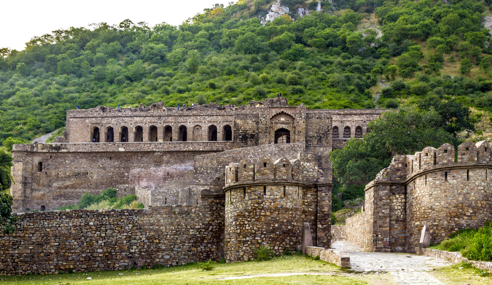

FIVE VISITING PLACE IN ALWAR, RAJSTHAN
- Bhanghar Fort.
- A 17th-century fort famous across India for its ruins and sweeping ghost stories.
- It is legally prohibited to enter after sunset due to its reputation as one of Asia's most haunted places.
- Bhangarh, Alwar District, Rajasthan 301410.

more information
- Bala Quila.
- A massive fort towering on a cliff 300 metres above the city.
- It features 15 large and 51 small towers, offering panoramic views of Alwar.
- Alwar-Jaipur Road, Sariska, Alwar, Rajasthan 301001.

more information
- Siliserh Lake.
- A serene, picturesque lake spread over 7 square kilometres
- You can enjoy boating or visit the beautiful Lake Palace, which has been converted into a heritage hotel.
- Siliserh Lake Road, Alwar, Rajasthan 301001.

more information
- Sariska Tiger Reserve.
- A sprawling national park nestled within the rocky Aravalli Hills.
- It is ideal for wildlife safaris to spot royal Bengal tigers, leopards, and crocodiles.
- Alwar-Jaipur Road, Sariska, Alwar, Rajasthan 301001.

more information
- Moosi Maharani Chhatri.
- A double-storeyed cenotaph showcasing a mix of Rajput and Mughal architecture.
- Built in honor of Maharaja Bakhtawar Singh and his queen, it features stunning red sandstone and white marble carvings.
- City Palace Complex, Alwar, Rajasthan 301001.

more information